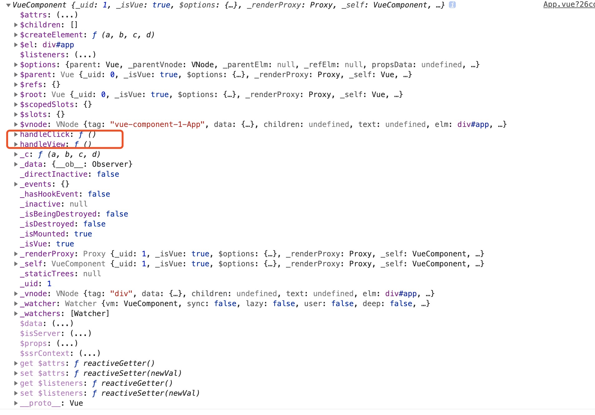

initMethods
分析：
- 获取
props，用来判断在methods中定义的方法名是否props定义的方法名重名 - 遍历
methods对象- 判断
methods对象中的属性是否是函数 - 判断
methods中的key是否存在于props - 判断
methods中定义法方法是否存在于vm实例，并且方法是否是以$或者是_命名，给出警告 - 如果
methods对象中定义的属性是函数，将每个key对应的value赋值给vm
- 判断
// 初始化methods方法
function initMethods (vm: Component, methods: Object) {
// 获取props，用来判断在methods中定义的方法名是否props定义的方法名重名
const props = vm.$options.props
// 遍历methods对象
for (const key in methods) {
// 非生产环境
if (process.env.NODE_ENV !== 'production') {
// 如果methods对象中的key对应的value的数据类型不是function,给出警告
if (typeof methods[key] !== 'function') {
warn(
`Method "${key}" has type "${typeof methods[key]}" in the component definition. ` +
`Did you reference the function correctly?`,
vm
)
}
// 如果定义了props，并且methods总中的key存在于props，给出警告
if (props && hasOwn(props, key)) {
warn(
`Method "${key}" has already been defined as a prop.`,
vm
)
}
// 如果methods中定义法方法存在于vm实例，并且方法是以$或者是_命名
if ((key in vm) && isReserved(key)) {
warn(
`Method "${key}" conflicts with an existing Vue instance method. ` +
`Avoid defining component methods that start with _ or $.`
)
}
}
// 如果methods中定义的方式不是function类型，返回空函数noop
vm[key] = typeof methods[key] !== 'function' ? noop : bind(methods[key], vm)
}
}
example：
<template>
<div id="app">
</div>
</template>
<script>
export default {
name: 'App',
data() {
return {
};
},
mounted() {
console.log(this)
},
methods: {
handleClick() {
console.log(1)
},
handleView() {
console.log(1)
}
}
};
</script>
结果如下图：
